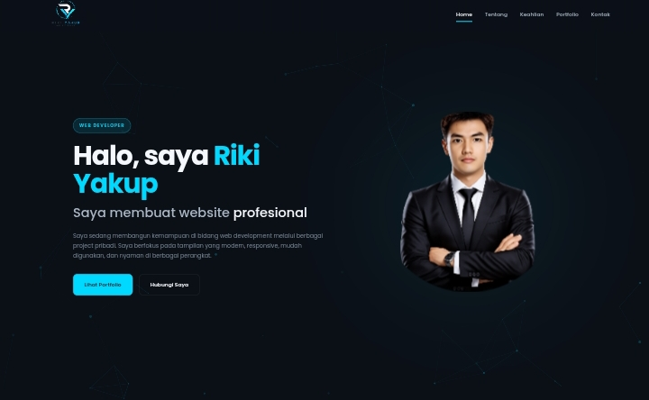

Personal Portfolio Website
Website portfolio pribadi yang saya buat untuk menampilkan project, kemampuan, dan proses belajar saya di bidang web development.

Personal Branding
Membuat website sederhana yang dapat digunakan sebagai portfolio online sekaligus memperkenalkan kemampuan saya dalam membuat website.
HTML, CSS & JavaScript
Project dibuat menggunakan teknologi frontend dasar dengan fokus pada struktur yang rapi, tampilan modern, dan responsive design.
UI & Frontend Development
Saya mengerjakan struktur halaman, styling, responsive layout, navigasi, dan interaksi dasar menggunakan JavaScript.
Personal Project
Project ini dibuat sebagai bagian dari proses belajar dan pengembangan kemampuan web development.